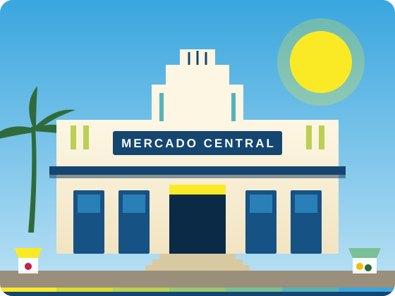

O livro do Mercado
A história do Mercado Central contada em capítulos curtos, com leitor que ajusta letras, cores e espaçamento.
Patrimônio de São Luís
Memória, sabores e gente da nossa ilha. Leia ou ouça o livro do Mercado e descubra, a partir dele, os caminhos para os pontos turísticos de São Luís.

A história do Mercado Central contada em capítulos curtos, com leitor que ajusta letras, cores e espaçamento.
Leitura em voz alta, parágrafo por parágrafo, com destaque do trecho e controle de velocidade.
Do Mercado para vários destinos da ilha, com distância, tempo e rota passo a passo.
Alto contraste, fonte para dislexia, VLibras, régua de leitura e atalhos de teclado em todo o site.
Rua de São João, Centro Histórico, ao lado da Fonte das Pedras e no fim da Avenida Magalhães de Almeida.
Ver no mapa e traçar caminhoAs bancas abrem cedo, por volta das 5h. As primeiras horas da manhã têm mais variedade de peixes e frutas.
Horário oficial de funcionamento: [confirmar com a administração]
Informações sobre rampas, banheiros acessíveis e vagas reservadas estão em levantamento pela Prefeitura.
Toque em um setor para saber o que encontrar.
Escolha um ano. No teclado, use as setas para a esquerda e para a direita.
Não conhece alguma palavra? No livro, termos como cuxá, juçara e platibanda vêm com explicação em linguagem simples.
Abrir o livroMapa interativo
Cada linha começa no Mercado Central e leva a um lugar que vale conhecer: casarões de azulejos, igrejas, museus, praias, mirantes e as cidades vizinhas.
Letras maiores, alto contraste, Libras, leitura em voz alta e muito mais — em todas as páginas.